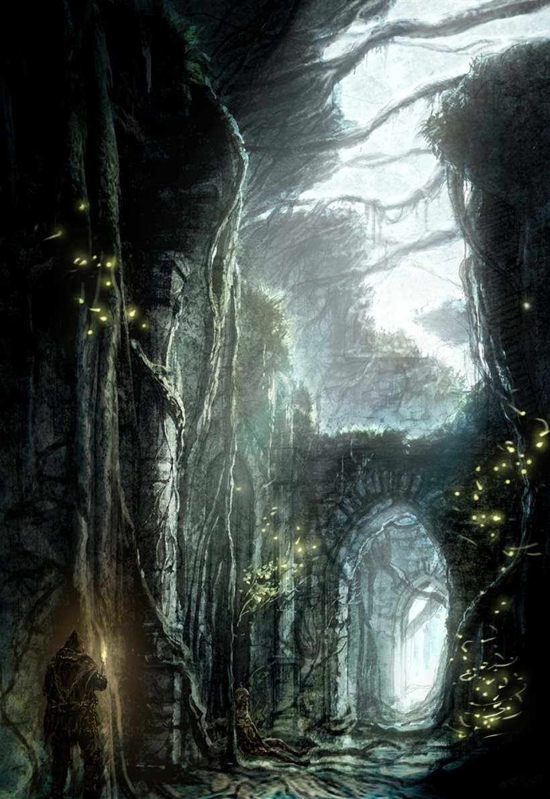
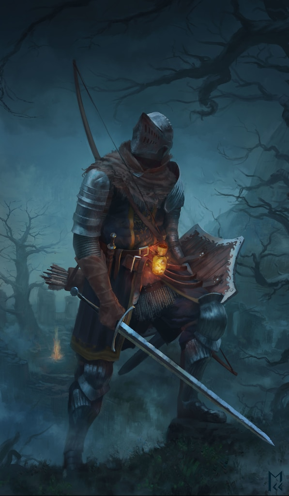
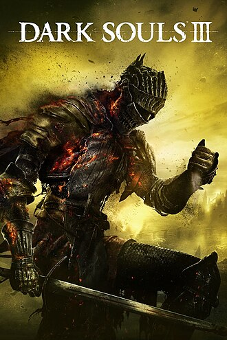
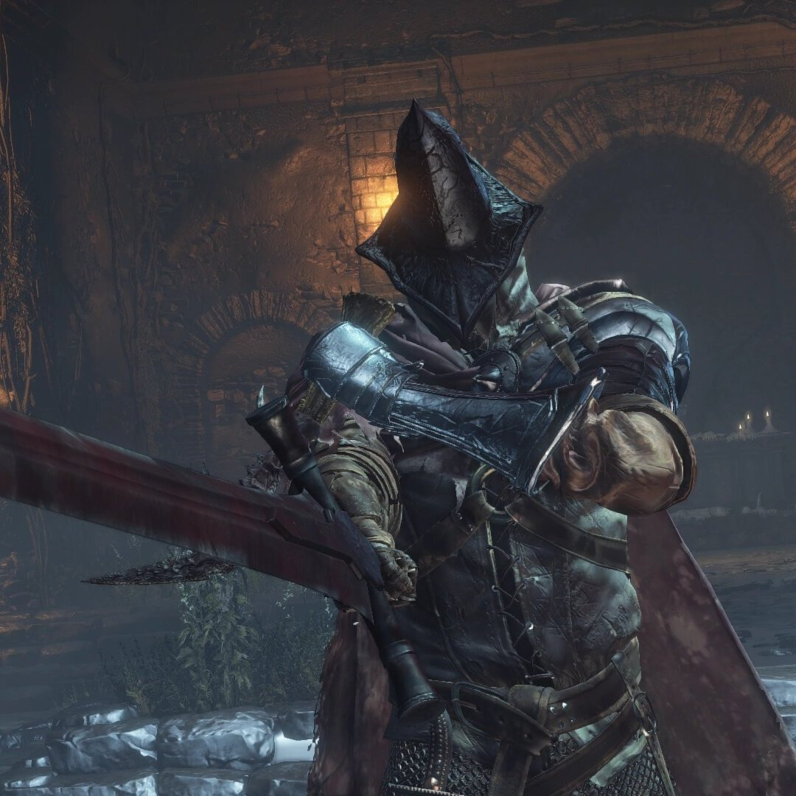
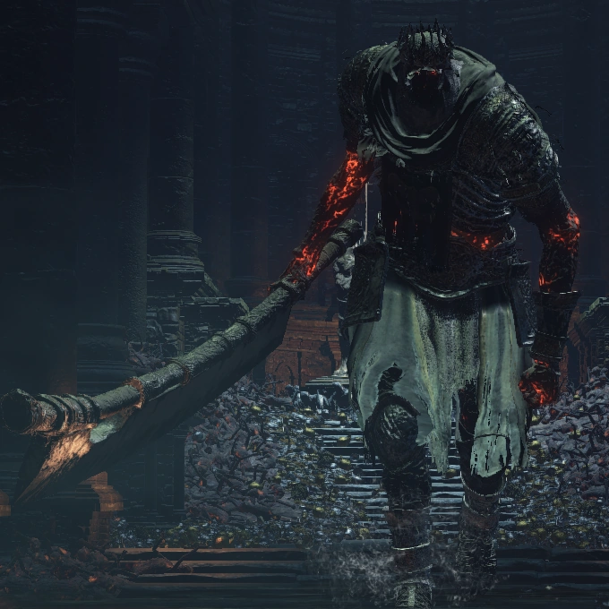
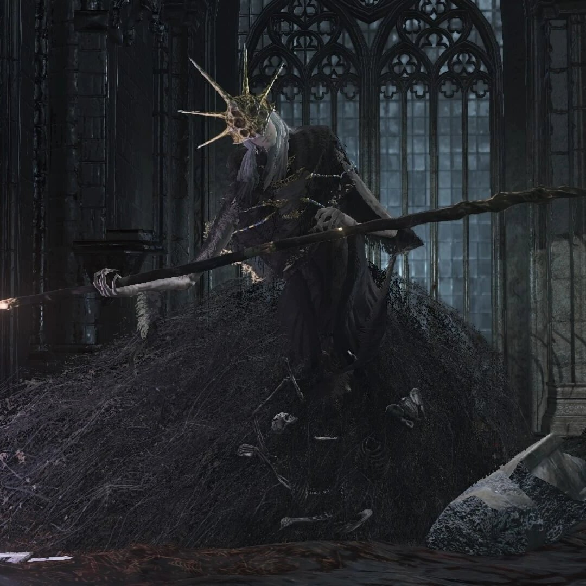
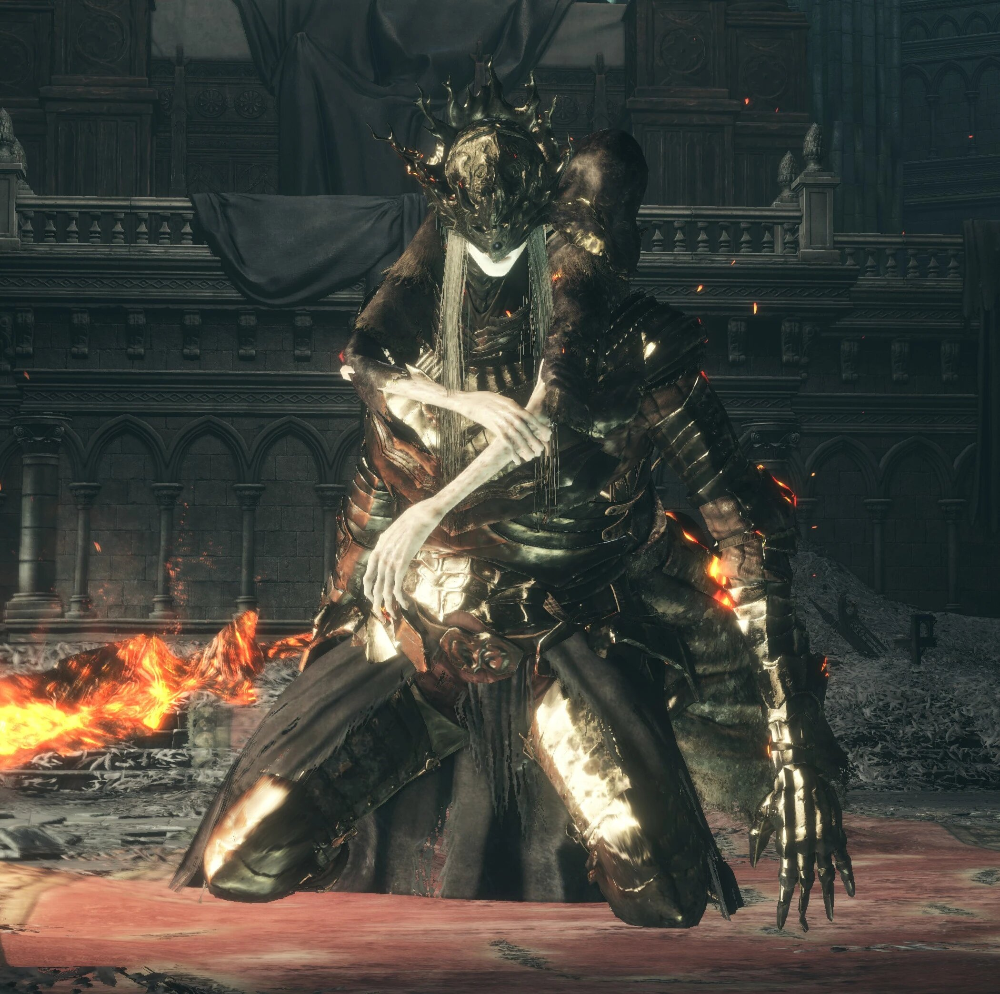
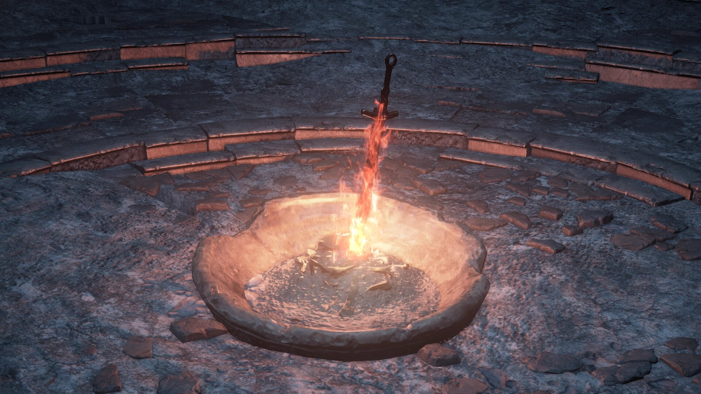

Світ Dark Souls 3 знаходиться на межі загибелі. Полум'я, що колись освітлювало все живе, згасає, а разом із ним руйнується порядок, який тримав світ у рівновазі. Відродження цього полум'я – це традиція, яку виконували багато поколінь, але тепер мало хто хоче принести себе в жертву.
У центрі подій знаходиться королівство Лотрік – остання опора старого світу. Його принци відмовилися від долі жертовних Лордів Попелу, що спричинило хаос і прискорило прихід темряви.

У світі Dark Souls існує таємнича хвороба – прокляття Нежиті. Воно забирає у людей їхню людяність, перетворюючи їх на божевільних істот – Порожніх. Це прокляття посилюється, коли вогонь слабшає. Гравець – один із таких неживих, але він має шанс змінити хід історії.
Герой пробуджується у світі, що вже практично загинув. Вулиці заповнені Порожніми, стародавні королівства лежать у руїнах, а більшість богів або мертві, або втратили свою силу.

Щоб не дати світові впасти у повну темряву, королі й герої минулого жертвували собою, згораючи у Вогнищі Першого Полум'я. Вони ставали Лордами Попелу, охоронцями вогню.
Однак у Dark Souls 3 нові Лорди Попелу відмовилися виконати свою місію. Тому герой повинен знайти їх, повернути на їхні трони або знищити, щоб знову розпалити Вогонь.

Легіон Неживих (Фарронські вовки)
Колишні захисники, що стали некерованими.

Йорм Велетень
Правитель загиблого міста, що обрав власний шлях.

Альдрік, Пожирач Богів
Жрець, що перетворився на жахливу істоту.

Лотрицькі Принци
Королівська династія, яка вирішила відмовитися від жертовності.

Гравець стає частиною вічного циклу: Вогонь слабшає – Темрява наступає – знаходиться новий герой, що розпалює Вогонь. Однак у Dark Souls 3 натякають, що цей цикл більше не працює.
Тому постає головне питання гри: Чи варто знову розпалювати Вогонь, чи настав час дозволити світові змінитися?
 Dark Souls 3
Dark Souls 3